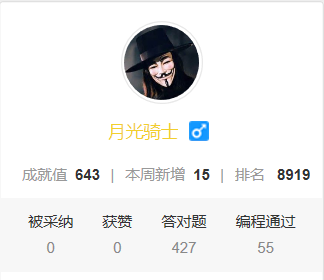

又是一年报考季，相信其中对IT行业充满兴趣的童鞋大有人在，作为一个在IT项目打杂半年、在IT公司打杂1年的学长，在此分享对IT行业以及如何进入IT行业的一些粗浅的看法和建议。
随着互联时代的到来，传统行业在见识了互联网带来巨大市场和利率后，开始往互联网化转型，比如传统的商店到淘宝、天猫等电商，传统的街机到联机网游，传统书本到电子书等。
so咋们还是单刀直入吧(→_→)，随着互联网化程度的提高，对IT人员的需求量也在扩大之中，依楼主之见，在不发生战争的情况下，未来12年内，市场对IT人员的需求都是供<求的情况(如有不实，纯属意外 手动微笑)。
那么如何进入IT行业呢？关于bs（browser server）楼主总结了一下：IT行业的职能包括 业务、前端、后端、测试、运维。
业务一般是指业务人员，但是也有例外，比如楼主现在所属的公司的业务是产品经理和运维，所以楼主总结了一下 业务就是根据市场需求对开发人员（包括前端、后端、运维）制定成果物的人。
前端是互联网产品外观的实现者，不同的公司会有不同的要求，比如楼主现在的公司对前端的要求低一点，只要会切图、用HTML画页面，会css样式，会一点JS就行(这TM算啥前端，明明就是个UI，不失礼貌的微笑)，
但是楼主的上家公司对前端的要求就更高了，他们不仅需要用HTML绘制页面，会css样式，还需要写js脚本，需要向服务器请求数据、处理数据，不过倒是不用切图。上面说的是前端在bs类公司的职能，在cs类公司，比如QQ，前端需要使用Qt（一种能够编写出精美界面，类似c++的编程语言）；如果在游戏公司，前端就是建模师，游戏公司应该会有专门的UI，负责各类原画的绘制。
后端是后台代码逻辑的编写者，比较直观的说法就是看不见摸不着的那种逻辑处理就是后端写的，比如登录，校验用户名、密码是否正确，就是后端写的，后端是需要跟前端和数据库或者服务器交互的，所以技术的复杂度会相对高一些，需要对前端、数据库有所了解。
测试工作主要是负责检测开发成果物是否能按照既定逻辑运行，如果有问题要向开发说明什么情景下会有问题，要求对业务有比较全面的了解。
运维的主要工作是把开发写的功能放到服务器(可以理解为一台特殊的电脑)上，并保证功能不会因为开发问题之外的原因而不能正常运作。
在bs中的上手复杂度大概是这样的：测试<业务<前端<运维<后端（前端和运维可根据公司要求互换）。
那么我们该怎么进入IT行业呢，楼主认为，最好选择有数据结构、算法、操作系统、计算机网络、数据库这几门课程的专业比较好（根据楼主的观察 计信学院 注意不是软件学院，下面设立的几个专业都是有这些基础课程的），如果想做游戏，可以学有图形学课程、c++、unity等课程的专业，如果是想做web开发，可以学习有HTML、css、JavaScript、Java、JSP等课程的专业。数据结构、算法、操作系统、计算机网络、数据库 这几门课程有助于一个IT开发人员的进阶，所以个人觉得比较重要，在上课过程中需要认真学，虽然可能一时派不上多大用场，还有就是这些课程的题目在笔试题中会有所体现，学好这些基础课程也可以大大提高笔试的成功率。
在此，楼主特别强调一个对于IT开发人员特别重要的几个技能——自学。说实话，楼主要不是靠着这个技能，也不可能这么快找到工作，说句实在话，现在在工作中用到的挺多技能都是楼主自学的；还有就是IT行业的技术迭代实在是太快了，学校只能学到一些比较基础，比较传（lao）统（jiu）的技能。
还有就是尽量在寒暑假或者在校期间找到IT类的兼职（在一线城市应该会有更多机会），可以留意计信学院、软件学院的校企合作项目（楼主当初就是参加了校企合作项目），在校期间的一段IT兼职经历对以后出来找工作是很重要的。想当年学长也是在学校的校企合作项目中打杂，从而开启了新世界的大门，在这里不得不吐槽，校企合作项目的酬劳大部分都被校领导“窃”走了，虽然钱不多，但是带给你的成长往往是飞跃性质的。
在校期间，如果发现有acs竞赛、软考（高级）、数学建模竞赛，建议参加一下，acs竞赛可以提高编程思维、提高算法、数据结构能力，锻炼开发思维；软考话，初级不建议参加，作用不大，高级的话，挂靠一些公司是可以白拿钱的，如果对高级没有信心，可以先考个中级压压惊（微笑）；数学建模对找机器学习（当今风口）类工作是有一定帮助的，数学建模中的很多拟合方法被用于机器学习的预测（楼主当初没有想到这一层，所以没有去找机器学习相关的工作），数学建模中使用的MATLAB也被广泛机器学习广泛使用。
在学习的过程中，记得把学习的过程整理成博客哦，这对你以后找工作也是一个加分项。学长以前就是觉得自己写的文章太 low 了，不敢写博客，现在发现自己损失了一大笔财富（手动微笑）。博客的话，推荐 github page + hexo + markdown，这套也是学长现在在用的，暂时没有发现更好了，如果不会的话，学长提供手把手教学（一个纯洁的微笑），或者考虑 CSDN。
个人觉得对所有行业都比较重要的一点，就是遵守规则，无论你进入什么行业、从事什么职业、做什么事情，遵守游戏规则都是很重要的一点，所有人都不愿意跟不遵守游戏规则的人共事，当然，在真正摸清楚规则的时候，就能打一些规则上的插边球了，比如逃课（手动微笑）。
最后我再来说说当今的几大风口吧——大数据、机器学习、ar、vr。从阿法狗打败李世石开始，互联网届就掀起了一股机器学习的浪潮，机器学习被用于数据预测、智能客服等领域，比如淘宝给你推荐的商品、微软小冰等；大数据是机器学习的根基，随着机器学习的兴起，大数据也随之崛起，大数据为机器学习提供预测依据，数据量越大、数据越准确，机器学习的预测越准确；ar、vr只能算是去年的风口，在电子试衣、全息游戏上表现出了巨大潜力，虽然现在还不够成熟，但是楼主相信在未来的5-6年里，ar、vr会再度冲上风口。
推荐个笔试刷题网站：https://www.nowcoder.com/ 顺便不要脸的附个刷题成就，虽然不刷题好多年~

别看楼主刷了500+道题，但是笔试还是个渣渣，仍然过不了 鹅厂、猪场、狼厂 … 的笔试（捂脸），各位学弟学妹好好加油哦，相信你们一定可以做的比学长更好
面经推荐博客（仅限java）：
http://blog.csdn.net/jackfrued/article/details/44921941
http://blog.csdn.net/jackfrued/article/details/44931137
http://blog.csdn.net/jackfrued/article/details/44931161
其他推荐：
┋◆冃.狌.交.伖，释.鲂.压.劦、棑.解.漃.瘼◆ 真 人】视||频. █网.址：wWw.gitHub. coM 。Knight-JNXU ◆┋
最后…